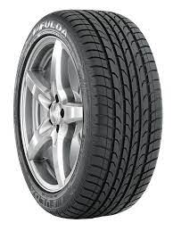
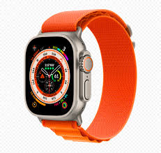

Result -Google lens and Mobilenet found it as a bottel
Test Image-
Output on Google Lens -Pc
Output on Mobilenet Model - Tv
Result -Google lens found it as a Pc and Mobilenet found it as a Tv
Test Image-
Output on Google Lens -shoes
Output on Mobilenet Model - shoes
Result -Google lens and Mobilenet found it as a shoes
Test Image-
Output on Google Lens -show piece
Output on Mobilenet Model - tool box
Result -Google lens found it as a tool box and Mobilenet found it as a show piece
Test Image-

Output on Google Lens - Weel
Output on Mobilenet Model - Weel
Result -Google lens and Mobilenet found it as a Weel
Test Image-

Output on Google Lens - Watch
Output on Mobilenet Model - Clock
Result -Google lens found it as a Watch and Mobilenet found it as a Clock
I have tested 6 images.
GOOGLE LENS have predicted 5 of them more accurately. And mobile lens was less accurately.
So according to my case study GOOGLE LENS is more Accurate.